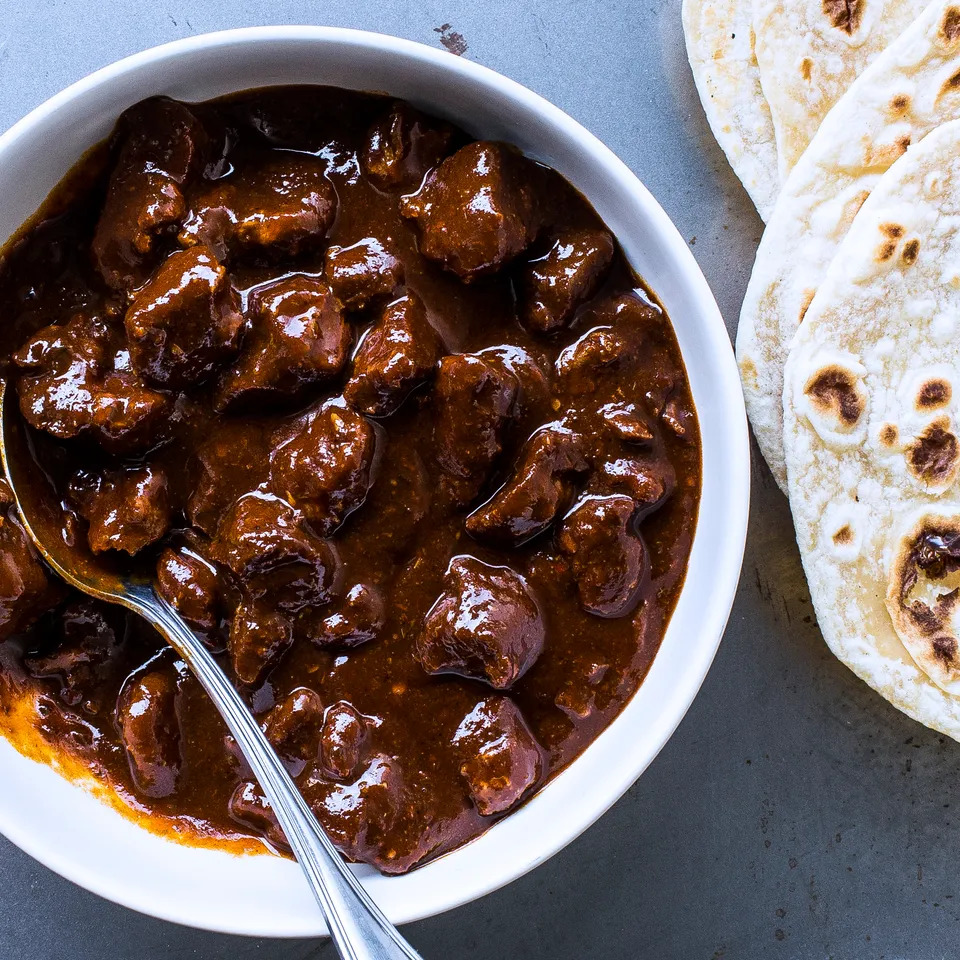

Chili Colorado

Description
This is a recipe to make chili colorado.
Ingredients
- 5 anchos
- 2 pasillas
- 2 guajillos
- 8 cups of chicken stock
- 2 pounds of boneless pork shoulder
- olive oil
- ~6 garlic cloves
- 2 bay leaves
- 1 tbsp ground cumin
- ~2 tsp chopped fresh sage and oregano
- tortillas
- salt/pepper
Instructions
- Remove the stems and seeds from the anchos, pasillas, and guajillos.
- Boil 3 cups of chicken stock, and cover the chilis with them. Let them steam, covered with plastic wrap, for around thirty minutes, until they are plump and tender.
- Cut 2 pounds of boneless pork shoulder into 1/2" pieces, season with salt and pepper, and brown the meat in a large, heavy pot over medium-high heat with enough vegetable oil to keep it from sticking.
- Chop the garlic and add it to the pot along with the bay leaves, the cumin, and the sage and oregano. Stir for about a minute, or until it's fragrant.
- Add the rest of the chicken stock, and let simmer uncovered for an hour.
- Stir in the chilis, and let simmer for another forty five minutes, or until the meat is tender and the sauce is a thick, mahogany-red color.
- Season with salt and pepper, and serve with tortillas.
Source